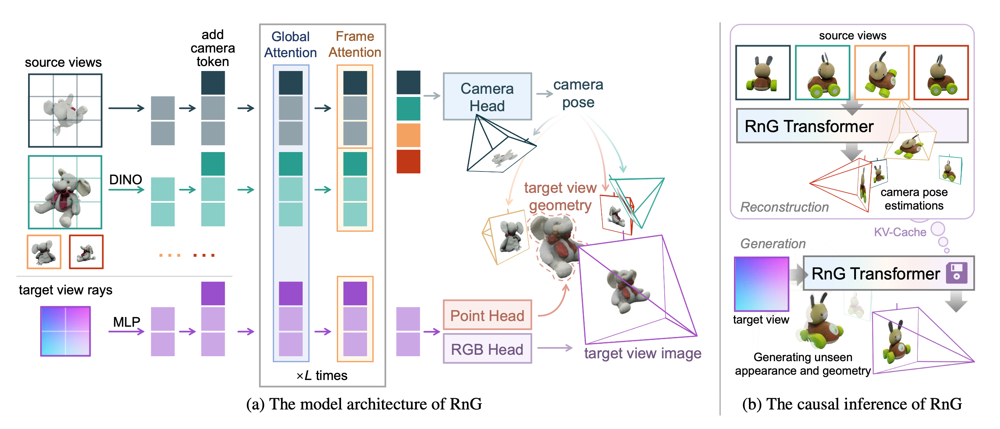

1 Northwestern Polytechnical University, China 2 Baidu Inc., China 3 Australian National University, Australia 4 CSIRO, Australia
✽ Project leader † Corresponding authors ‡ Work done during an internship at Baidu
Human perceive the 3D world through 2D observations from limited viewpoints. While recent feed-forward generalizable 3D reconstruction models excel at recovering 3D structures from sparse images, their representations are often confined to observed regions, leaving unseen geometry un-modeled. This raises a key, fundamental challenge: Can we infer a complete 3D structure from partial 2D observations? We present RnG (Reconstruction and Generation), a novel feed-forward Transformer that unifies these two tasks by predicting an implicit, complete 3D representation. At the core of RnG, we propose a reconstruction-guided causal attention mechanism that separates reconstruction and generation at the attention level, and treats the KV-cache as an implicit 3D representation. Then, arbitrary poses can efficiently query this cache to render high-fidelity, novel-view RGBD outputs. As a result, RnG not only accurately reconstructs visible geometry but also generates plausible, coherent unseen geometry and appearance. Our method achieves state-of-the-art performance in both generalizable 3D reconstruction and novel view generation, while operating efficiently enough for real-time interactive applications.
Given a few unposed images of an object, 3D reconstruction foundation models like VGGT can recover the structure of observed regions, but leaves the unseen part un-modeled. RnG can estimate its complete 3D geometry within a second on an A800 GPU, using a single feed-forward transformer. RnG implicitly reconstructs 3D and render onto new viewpoints with appearance and geometry. By accumulating these rendered point maps, RnG can generate a complete 3D object, working like a virtual 3D scanner.

The Network Architecture of RnG. (a) Source view images are first tokenized using the DINO vision transformer; the Plücker ray map representing the target view point goes through a linear layer. After adding camera tokens for each view, all tokens will then alternately attend to global- and frame-level attention blocks. Finally, camera tokens from input views are used to estimate camera poses, while a point head and an RGB head process ray tokens from the target view, providing geometry and appearance estimations. (b) In inference, the model can cache K/V token from source views, synthesizing novel view geometry and geometry at a higher speed.
@inproceedings{RnG,
title={RnG: A Unified Transformer for Complete 3D Modeling from Partial Observations},
author={Xiang, Mochu and Shen, Zhelun and Li, Xuesong and Ren, Jiahui and Zhang, Jing and
Zhao, Chen and Liu, Shanshan and Feng, Haocheng and Wang, Jingdong and Dai, Yuchao},
booktitle={CVPR},
year={2026}
}